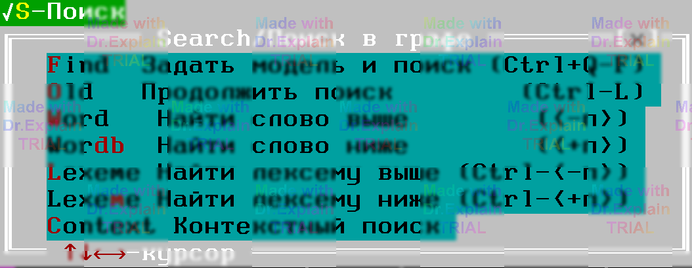
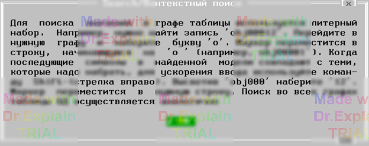

5. Меню Search (поиск) окна архива ПК
Когда окно архива активно, доступно специальное меню Search. «Горячие» клавиши полностью повторяют сочетания, применяемые для поиска в текстовом редакторе ПОАСК ([11, п. 13]).

Поиск выполняется в текущей колонке таблицы архива. В кадой записи рассматривается полный текст поля, даже если он не помещается целиком на экране.
Основные команды поиска
- Задать модель и поиск (Ctrl + Q F) – открывает диалог задания образца и немедленно ищет первое вхождение ([11, п. 13.1]).
- Продолжить поиск (F3) – переходит к следующему совпадению ([11, п. 13.9.9]).
- Найти слово выше / ниже (Ctrl + PgUp / Ctrl + PgDn) – поиск целого слова вверх или вниз ([11, 13.9.5], 13.9.7).
- Найти лексему выше / ниже (Shift + Ctrl + PgUp / Shift + Ctrl + PgDn) – поиск по лексеме (части слова) ([11, 13.9.6], 13.9.8).
Контекстный поиск
Контекстный поиск учитывает окружение (колонку, селекцию и т. д.). При выборе команды появляется подсказка, поясняющая, как задать шаблон и ограничения.
